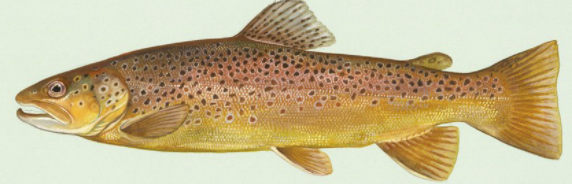

Rodzaje ryb
II Sposób podziału
| Rodzaj | Przykładowa ryba | Średnia wielkość | Okres ochronny | Zdjecie |
|---|---|---|---|---|
| Ryby tłuste | Łosoś | 120 | 1 października - 31 grudnia |  |
| Ryby średnio-tłuste | Pstrąg | 40 | 1 września - 31 stycznia |  |
| Ryby chude | Flądra | 34 | 1 lutego - 31 maja |  |